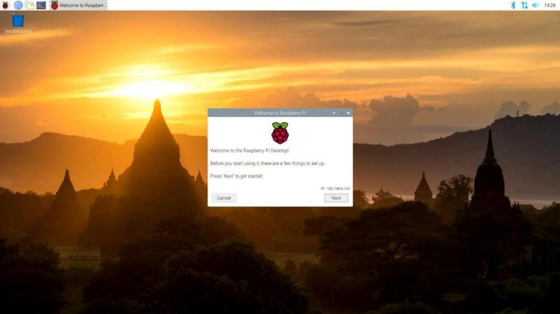

Operazioni di base
Ripartiamo dal Raspberry come lo abbiamo lasciato un attimo fa: acceso, pronto (caricamento iniziale finito), con interfaccia grafica

Ricordo inoltre le credenziali dell'account di default.
USER: pi
PASS: raspberry
Il tool che ci viene presentato davanti serve per la configurazione iniziale. Mi raccomando di non cambiare la password dell'utente pi a meno che non siate assolutamente sicuri di ricordarvela. In caso siate senza interfaccia grafica, oppure vogliate procedere con la buona vecchia riga di comando, chiudete quella finestra e leggetevi il prossimo capitolo.
Configurazione Raspberry
Il sistema operativo Raspberry Pi OS fornisce un tool a linea di testo da cui
accedere a tutte le configurazioni di base del Raspberry. Per accedere
ad esso si dovrà utilizzare il comando sudo.
A quel punto si avrà accesso ad una interfaccia grafica-testuale con cui completare la configurazione:

Le opzioni sono in ordine e si può procedere tramite esse a configurare il Raspberry. Alcune opzioni sono chiarissime e non necessitano di spiegazioni; ad esempio quella di cambiare password :)
Mi dedico a quelle che di solito servono:
- Network Options
-
Le opzioni che trovate qui servono per impostare la rete. Sono cose che potete fare tranquillamente anche tramite l'interfaccia grafica, se la utilizzate.
L'opzione importante da settare all'inizio riguarda però l'hostname, il nome del vostro Raspberry! Tramite quello sarà più facile identificarlo nella rete! Per applicare questa impostazione serve di riavviare il Raspberry. Potete farlo anche alla fine di tutta la configurazione ;)
- Localisation Options
-
Queste opzioni servono per la localizzazione: tastiera italiana, lingua dei programmi, data, ora e loro formati, WiFi country code, etc... Sono molto importanti da impostare all'inizio in modo da non aver più problemi successivamente. Passate ognuna delle impostazioni alla ricerca delle opzioni italiane; per quanto riguarda il locale scegliete l'opzione it_IT.UTF-8.
- Interfacing Options
-
In questo menù ci sono le opzioni per attivare o disattivare alcune periferiche o alcuni strumenti software per l'interazione con il Raspberry. Tra queste opzioni di interfaccia troviamo la camera, i bus I2C, 1-wire e SPI, la seriale, la remote GPIO, i software SSH e VNC. Attivate o disattivate ciò che vi serve (se non sapete che vi serve... disattivatelo). Per applicare le opzioni serve il riavvio.
- Advanced Options
-
Qui ci sono impostazioni abbastanza complicate, studiare... per credere!
Terminate le impostazioni è importantissimo procedere ad un riavvio per essere sicuro di aver applicato tutte le modifiche necessarie!
Prime operazioni
Riavviato il sistema operativo, diamo un occhio più da vicino al desktop del Raspberry
Poiché considero siate utenti di fascia medio-alta davanti ad un Sistema Operativo, immagino non abbiate problemi ad individuare le applicazioni più comuni che di certo utilizzeremo su Raspberry.
Le elenco:
- Browser (Chromium, la versione opensource di Google Chrome)
- File manager (PCManFM, un software per navigare tra i file del Raspberry)
- Terminale (Terminal, per accedere alla riga di comando)
- Text Editor grafico (Mousepad, un programma tipo il Blocco Note di Windows)
- Text Editor testuale (nel terminale: nano)
- Editor Python (IDLE, oppure Thonny... Facile!)
Considero inoltre che siate in grado di muovermi nel menù principale alla ricerca di una applicazione e sappiate interagire con la system tray per operazioni tipo controllare l'ora, abilitare/disabilitare bluetooth o wifi, montare e smontare una penna USB, etc...
Se volete prendere confidenza con queste operazioni, questo è il momento di farlo, prima di andare avanti e inesorabilmente iniziare a fingere di aver capito...
Suggerimento
Fra le tante cose nuove su cui documentarsi, vale secondo me la pena di spendere 5 minuti e curiosare su Internet a proposito della organizzazione del file system su linux.
Provate a cercare quella frase in rete e a leggere qualcosa a proposito.
5 minuti, dai...
Il terminale Linux
Adesso vogliamo dedicare un pò di tempo a prendere confidenza con il terminale Linux. Utilizzare l'interfaccia testuale può essere molto vantaggioso in diversi casi:
-
Tutti i sistemi Linux hanno la stessa interfaccia testuale, ma le interfacce grafiche sono potenzialmente tutte diverse
-
La connessione remota ad un dispositivo in modalità testuale è veloce, sicura e facile da stabilire
-
L'interfaccia testuale è molto potente. Pensate all'interfaccia grafica del vostro Sistema Operativo preferito:
- Come si fa a controllare l'IP della macchina?
- Come si fa a cercare un file all'interno di tutto il computer?
- Come si fa a disintallare un programma? Arrestare un servizio?
Tutte queste operazioni costano un unico comando, una riga di codice con l'interfaccia testuale. E richiedono un secondo o poco più per l'esecuzione.
Adesso che ho attirato la vostra attenzione sull'utilizzo della linea di testo, vediamo alcuni semplici comandi organizzati per utilizzo:
Muoversi fra i file
| Comando | Descrizione |
|---|---|
| ls | Elenca i file nella directory corrente (list) |
| cd | Cambia Directory. |
| pwd | Directory corrente |
Manipolazione del testo
| Comando | Descrizione |
|---|---|
| cat | Concatena i file e ne manda il contenuto nello standard output |
| less | Visualizza il contenuto di un file |
| nano | Editor testuale |
Gestione di file e directory
| Comando | Descrizione |
|---|---|
| mkdir | Crea una directory, una cartella |
| touch | Crea un file |
| cp | Copia un file o una directory |
| mv | Sposta un file o una directory |
| rm | Rimuove un file o una directory |
Sistema
| Comando | Descrizione |
|---|---|
| shutdown | Inizia la procedura di spegnimento |
| reboot | Riavvia il sistema |
Utilities
| Comando | Descrizione |
|---|---|
| history | Elenca la cronologia dei comandi digitati |
| man | Apre il manuale richiesto |
Permessi di esecuzione
Il comando sudo permette di eseguire qualsiasi comando con privilegi amministrativi.
Basta precedere sudo a qualsiasi comando per fare come se fosse l'amministratore
del sistema ad eseguirlo.
Gestione software
L' Advanced Packaging Tool (conosciuto con l'acronimo apt) è il
gestore standard di pacchetti software della distribuzione Debian e di
tutte le sue derivate. In particolare vale la pena di ricordare Ubuntu e
Raspberry come derivate di punta.
Questo sistema di gestione dei pacchetti è in grado di cercare, scaricare, installare qualsiasi software disponibile nei repository indicati nei file di configurazione per renderli disponibile all'istante!
Attenzione!
Poiché il comando apt si occupa di operazioni amministrative, deve
essere sempre preceduto dal comando sudo.
Vediamo via via le opzioni di apt più importanti:
Aggiorna l'elenco del software presente nel repository. In questo modo APT saprà qual è l'ultima versione del software disponibile online.
Sincronizza il software di sistema con quello presente nel repository. Praticamente permette di aggiornare tutto il software all'ultima versione disponibile.
Cerca il termine "package" fra i pacchetti software disponibili nel repository. Funziona anche senza sudo.
Scarica "package" e lo installa nel sistema, rendendolo disponibile all'utente.
Rimuove "package" dal sistema.